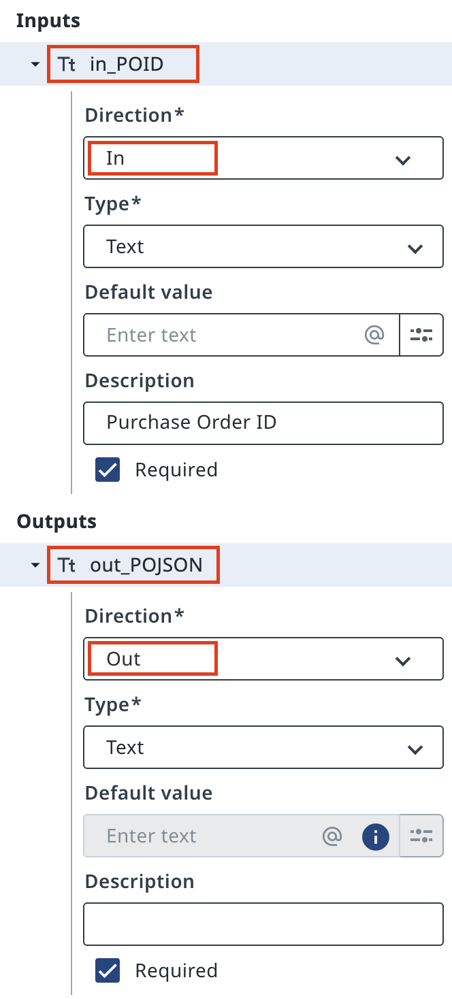
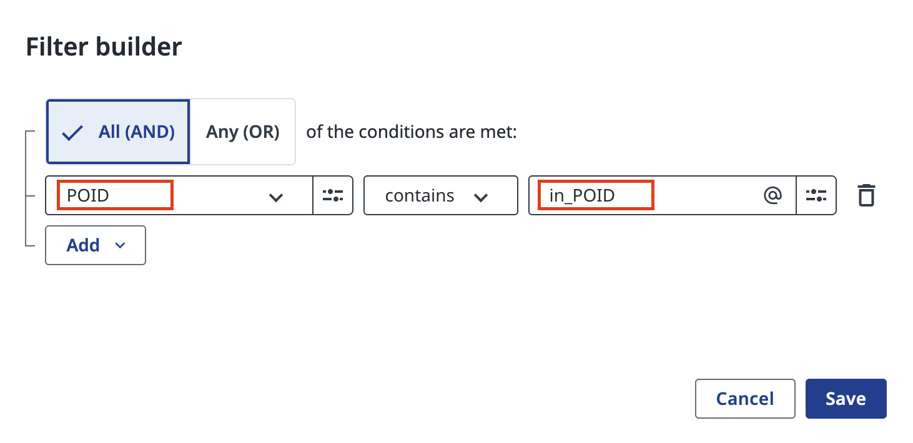
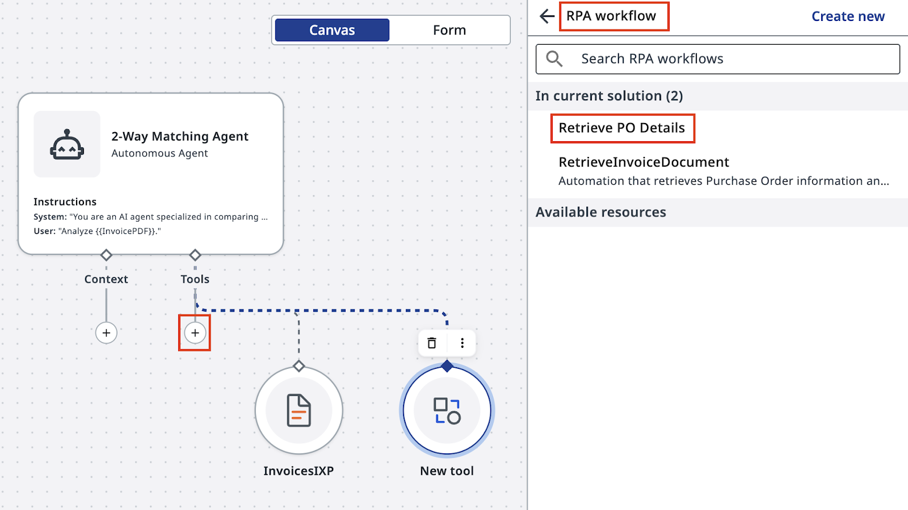
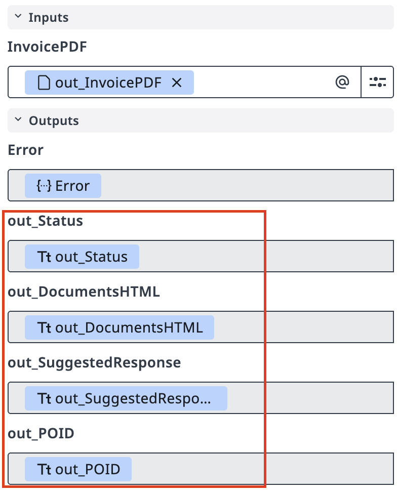
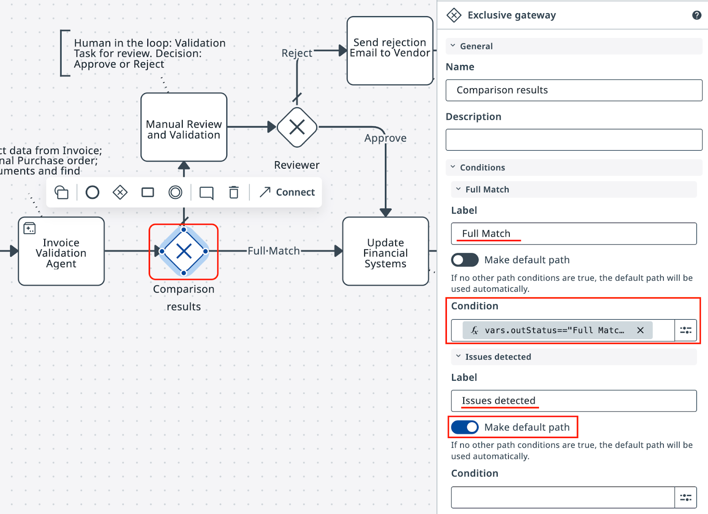

Step 3 — Configure an Agent¶
Extract invoice data using IXP, look up the PO, and perform matching
Goal¶
Configure the 2-Way Matching Agent with two tools: an IXP extraction tool and an RPA workflow tool that queries the Purchase Order database. The agent receives a PDF invoice, extracts structured data from it, looks up the corresponding PO, and returns a matching decision.
How the Agent Works¶
The agent follows this sequence:
- Receives the invoice PDF filename
- Calls the IXP tool to extract structured invoice data (header, line items, totals, PO ID)
- Uses the extracted PO ID to call the RPA workflow tool and retrieve the matching Purchase Order from the database
- Compares invoice against PO and returns:
Full MatchorFailed Match
PO ID Format¶
PO IDs in this exercise follow the format PO- followed by digits — for example, PO-123456. The agent uses this format when filtering the database query.
Steps¶
Part 1: Create the agent¶
-
In Studio Web, create a new Agent. Name it 2-Way Matching Agent.

-
Configure the Input Argument:
Argument Type Description InvoicePDFFile The PDF invoice file retrieved from Storage Bucket 
-
Configure the Output Arguments:
Argument Type Description out_StatusString Full MatchorFailed Matchout_DocumentsHTMLString Side-by-side HTML comparison out_SuggestedResponseString Suggested rejection email to supplier out_POIDString The PO ID extracted from the invoice 

-
Save the argument configuration.

Part 2: Configure the prompts¶
-
Enter the following User Prompt:

-
Configure the System Prompt with matching rules and tool instructions. Include instructions for calling the IXP tool first, extracting the PO ID, then calling the PO lookup tool.

Part 3: Add the IXP tool¶
-
Go to the Tools tab and add the IXP tool.

-
Select the InvoicesIXP project as the IXP extraction source.

-
Configure the tool description:
Use this tool to extract structured data from the invoice PDF, including header information, line items, totals, and the Purchase Order ID.
-
Save the IXP tool configuration.

Part 4: Add the PO lookup tool¶
-
Add a second tool: an RPA Workflow tool.

-
Select Query Entity Records from the PurchaseOrdersDatabase source.

-
Configure the filter: POID equals in_POID.

-
Configure the tool description:
Use this tool to retrieve Purchase Order data from the database. Filter by POID using the PO ID extracted from the invoice. PO IDs start with "PO-" followed by digits.
-
Save the PO lookup tool configuration.

Part 5: Test the agent¶
-
Test the agent with a sample PDF invoice from the Storage Bucket. Confirm the agent calls the IXP tool to extract data.

-
Review the IXP extraction results — verify the agent identified the PO ID correctly.

-
Confirm the agent called the PO lookup tool with the extracted PO ID.

-
Review the final agent output — verify
out_Status,out_DocumentsHTML,out_SuggestedResponse, andout_POIDare all populated.

Part 6: Connect the agent to Maestro¶
-
Return to your 2-Way Matching IXP Process in Maestro. Select the agent task node.
-
Set the action to Start and wait for agent. Select 2-Way Matching Agent.

-
Map the robot output to the agent input:
Robot Output Agent Input out_FileNameInvoicePDF
-
Add an Exclusive Gateway after the agent task. Configure the expression for the Full Match path:
-
Run the process in debug mode and confirm the gateway routes correctly.

← Step 2: Configure a Robot | Next: Configure Human Validation →